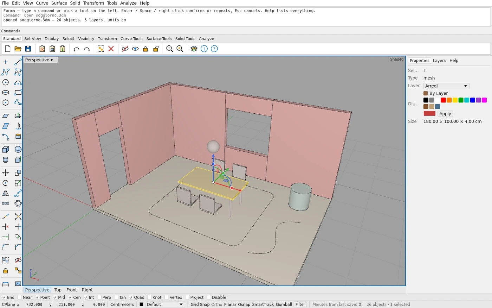
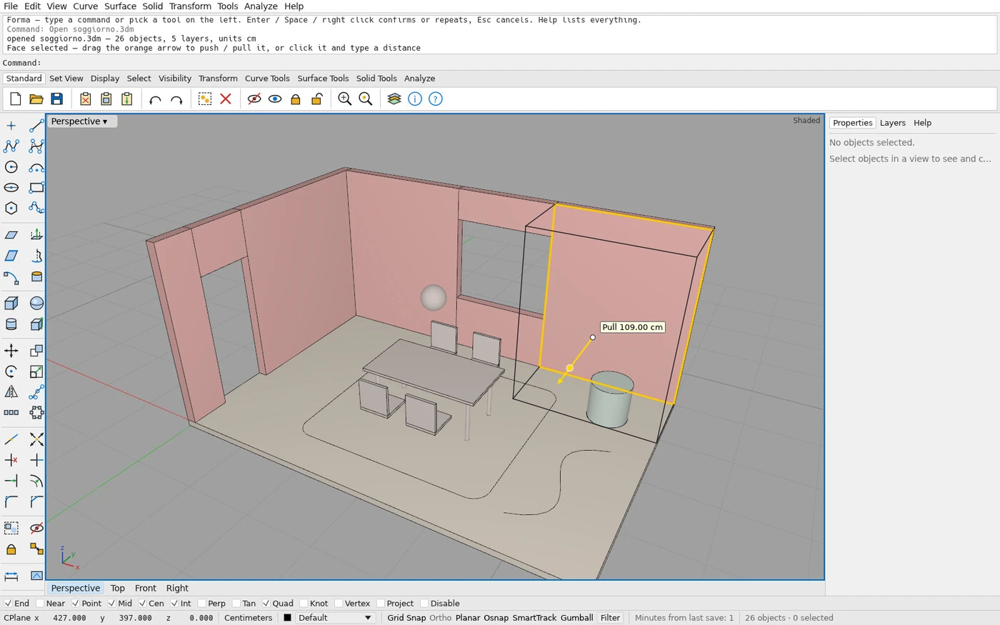
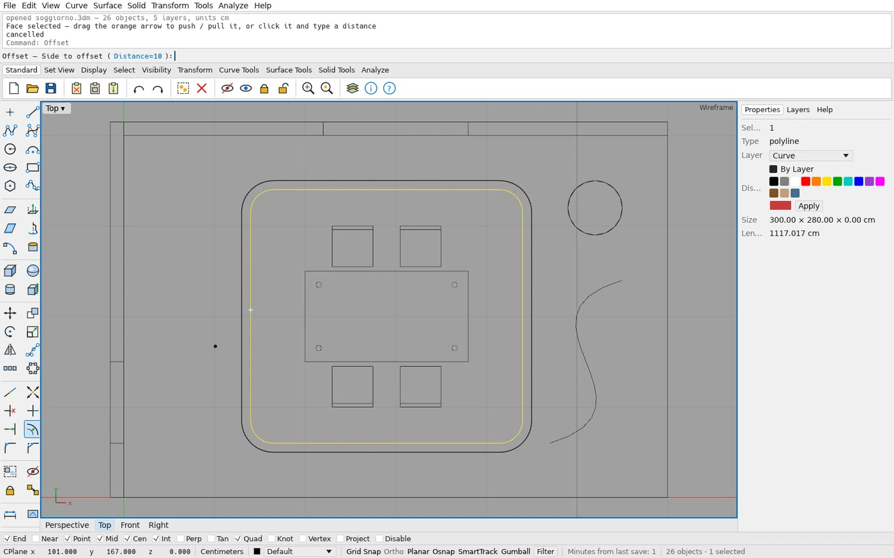
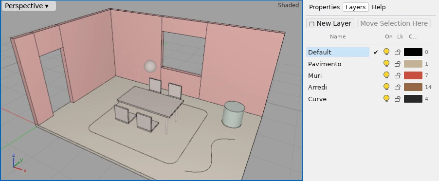

FORMA
Un modellatore 3D gratuito con comandi e strumenti ispirati a Rhino.
Forma serve a modellare spazi e oggetti, come una stanza, un mobile o un dettaglio costruttivo, con misure esatte in centimetri. Si scrive un comando (Box, Extrude, Offset…) o si clicca un’icona, e il modello si costruisce in quattro viste: pianta, fronte, lato e prospettiva.
FORMA riprende comandi e strumenti familiari a chi usa Rhino 8: snap, gumball, layer e file .3dm. Funziona su Windows e Linux. Con Ask AI puoi descrivere il modello a parole: un modello AI locale genera lo script per costruirlo, senza connessione a internet.
Repository ↗ (si apre in una nuova scheda) Ultima release ↗ (si apre in una nuova scheda) Changelog ↗ (si apre in una nuova scheda)
Un designer può costruirsi il proprio strumento di lavoro?
L’ho costruito per il mio lavoro di interior design al Politecnico di Milano, e per rispondere a una domanda precisa: gli agenti AI possono realizzare un vero programma CAD, se una persona fa da architetto e da revisore?
Quasi tutto il codice è scritto con agenti AI (Claude Code). Io definisco l’architettura, rivedo ogni modifica e uso il programma nel mio lavoro; al momento sono l’unico utente. Ogni azione passa da un comando e ha i propri test. I controlli automatici verificano la separazione tra i moduli; ogni modifica deve superare i test su Linux e Windows.
Prova Forma — la riga di comando
Una demo nel browser · nulla viene salvatoSequenza della demo: clicca un comando o scrivilo.
Rectangle 0,0 600,400— pianta di una stanza 6 × 4 mSelLast— seleziona l’ultimo oggettoExtrude 280— muri alti 280 cmBox 100,100 280,190 75— un tavolo 180 × 90, alto 75Save soggiorno.3dm— salvato in formato Rhino
L'app — cinque schermate
Forma 1.0 · Windows e Linux



Chiedi, e Forma modella.
Il pannello Ask AI trasforma una richiesta in linguaggio naturale in uno script Python che usa i comandi di Forma. Lo scrive un modello che gira sul tuo computer: nulla viene eseguito finché non premi Run, e un solo Annulla cancella l’intero script.
- Parete parametrica«a parametric wave wall of 30 fins»
- Spirale di sfereseno e coseno, scritti dall’AI
- Scala di 14 gradinialzata 17 cm, in un secondo
Privato · offline · gratis: i modelli non lasciano il PC.
- 01Installa Ollama (ollama.com)
- 02Scarica un modello: ollama pull qwen2.5-coder:7b
- 03In Forma premi Ask, la stella viola
Progettare con l'AI — il metodo
Definire e verificareLavoro con gli agenti AI per sviluppare i miei strumenti. Definisco il problema, scrivo le specifiche e verifico il risultato. Gli agenti mi aiutano a scrivere il codice e a gestire le attività ripetitive; ogni scelta viene rivista durante lo sviluppo.
- 01
Definire e verificare
Scrivo il brief, divido il lavoro in passi piccoli e rivedo ogni risultato: l’AI propone, la decisione resta mia.
- 02
Costruire i propri strumenti
Forma, il mio modellatore 3D in Rust, è nato così: io ho fatto da architetto e revisore, gli agenti AI hanno scritto il codice.
- 03
L’AI dentro lo strumento
Con Ask AI, una richiesta in linguaggio naturale diventa uno script per modellare in FORMA. L’AI viene eseguita sul mio computer e lo script parte solo quando premo Run.
- 04
Anche questo sito
Il portfolio è stato progettato e sviluppato insieme a un agente AI, con controlli automatici su immagini, traduzioni e sicurezza.
Architettura — dagli strati al comando
Rust · un solo ingresso per ogni azioneapps/forma · forma-cliApp desktop e riga di comandoforma-uiInterfaccia egui: viste, riga di comando, pannelliforma-engineRegistro dei comandi, parser, snap: un solo ingresso per ogni azioneforma-render · io-3dm · io-meshRendering wgpu e file .3dm tramite openNURBSforma-docDocumento, layer, annulla / ripetiforma-geomGeometria: NURBS, solidi esatti, tolleranze esplicite
- Rust
- wgpu
- egui
- openNURBS
- OpenCascade
- Claude Code
- GitHub Actions
Repository — codice aperto su GitHub
3 progetti- forma (si apre in una nuova scheda)RustModellatore 3D personale in stile Rhino, costruito con agenti AI.
- Portfolio (si apre in una nuova scheda)JavaScriptQuesto sito: HTML, CSS e JavaScript senza dipendenze, pubblicato con GitHub Pages.
- filippovisentin (si apre in una nuova scheda)HTMLLa prima versione del portfolio online.
Progetto indipendente e clean-room: Rhino è usato solo come riferimento di comportamento (come rispondono i comandi), senza copiare codice, documentazione, icone o interfaccia di McNeel. Non è affiliato né approvato da Robert McNeel & Associates; Rhino e Rhinoceros sono marchi registrati di Robert McNeel & Associates. openNURBS è usato come libreria con la sua licenza. Codice sotto licenza MIT o Apache-2.0.